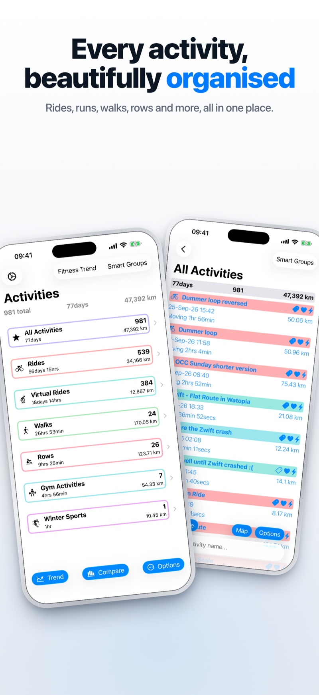
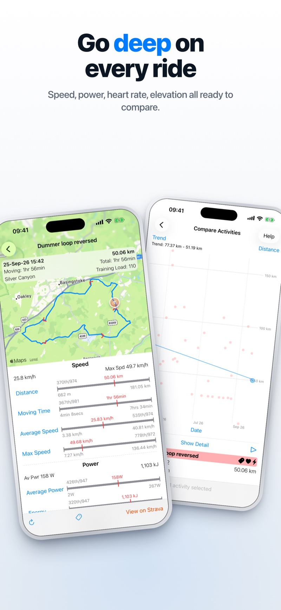
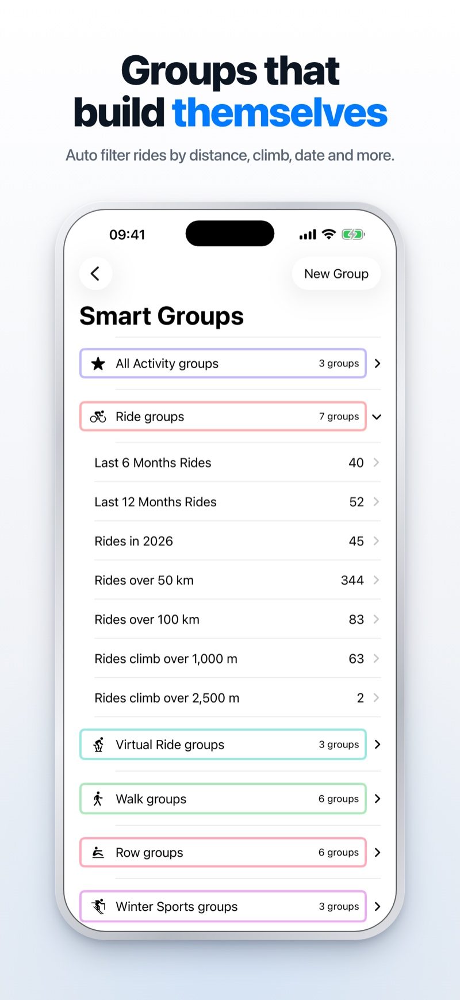
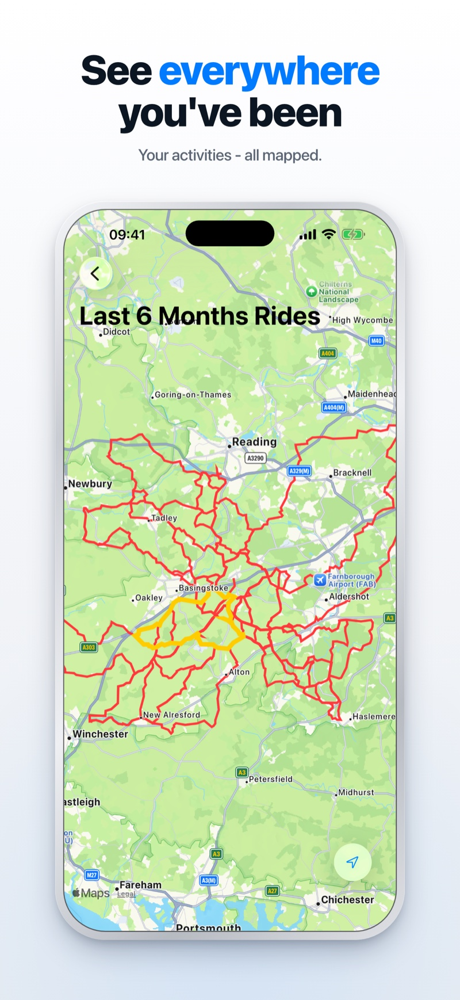
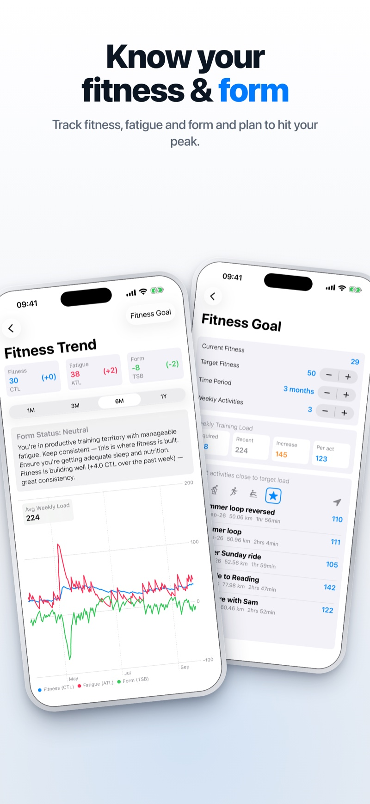

Analyse your Strava activities
Explore every ride, run and walk in far more depth than ever before.
Download on the App Store See features
Everything your activities have to tell you
RideViewer connects to Strava and turns your data into insight.
Every activity, beautifully organised
Rides, runs, walks, rows and more, all in one place. Filter, sort and tag your activities to find exactly what you're looking for.
Go deep on every ride
Speed, power, heart rate, cadence and elevation, ready to compare. Dive into splits and stream charts for any part of your activity.

Groups that build themselves
Smart groups automatically filter your rides by distance, climb, date and more, so your favourite routes and routines are always one tap away.

See everywhere you've been
Overlay all your routes on a single map and see how far you've really travelled.

Know your fitness & form
Track fitness, fatigue and form over time, and plan to hit your peak when it matters.
